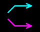
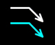
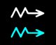

Navigation Display Symbols
Table 1
| SYMBOL | NAME | MODE | DEFINITION |
| Waypoint (W, G, M) |
NAV ARC PLAN |
The TO waypoint displays white. All other flight plan waypoints display green. Waypoints not in the flight plan display magenta when WPT button is selected on. | |
| Start of Climb (B, W) |
NAV ARC PLAN |
The point on the flight plan where the airplane is predicted to start the climb. Blue when CLB armed; white when not armed. | |
|  | Level Off Point (B, M) |
NAV ARC PLAN |
When blue, the point where the airplane will reach the FCU-selected altitude. When magenta, the point where the airplane will reach a VNAV altitude constraint if not set in the FCU. |
|  | Top of Descent (B, W) |
NAV ARC PLAN |
The top of descent or continue to descend symbol. Blue when DES/FINAL armed; white when DES/FINAL not armed. |
|  | Intercept Point (B, M) |
NAV ARC PLAN |
Indicates the point where the airplane meets the FMGC-computed vertical profile. If the intercept is from above the vertical path, the descent is based upon using 1/2 speed brakes. Blue when DES is engaged; white when only NAV is engaged. |
| Speed Change (M) |
NAV ARC PLAN |
Indicates the point where the airplane will initiate an automatic acceleration or deceleration from current speed to new computed speed for SPD LIM, SPD CSTR or HOLDING SPEED. |